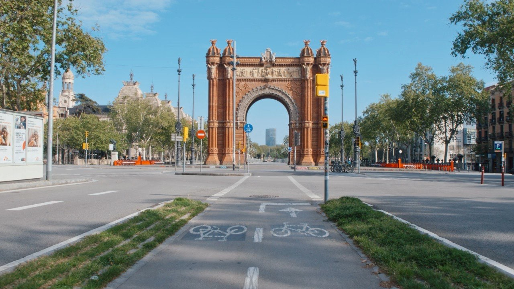

Ciudades que se
miran de otra forma
Desliza para explorar
Nuestra visión
Creemos que cada ciudad tiene una forma propia de mirarse. Recorremos sus calles, su luz y su gente para contar lo que no aparece en las postales.

Ciudades
Dónde hemos estado
- Barcelona2021 — 2026
- Málaga2021 — 2026
- Sevilla2022 — 2025
- Valencia2025 — 2026